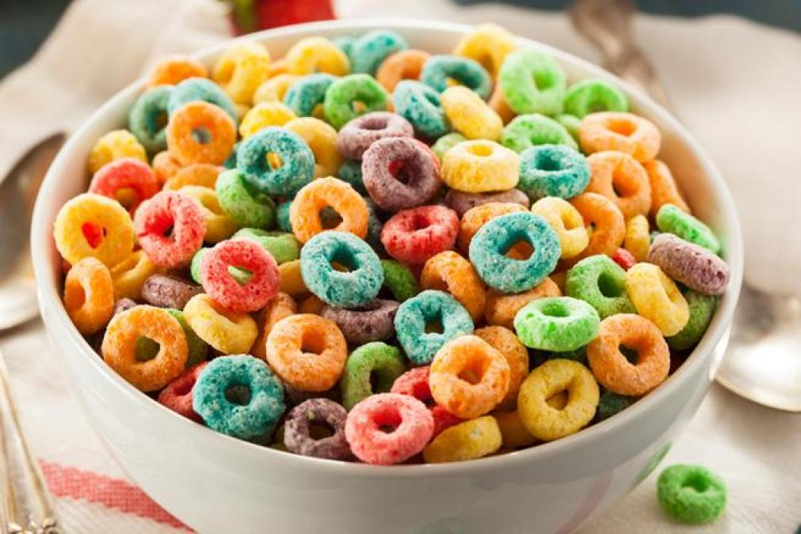

Cereal

cereal, also called grain, any grass (family Poaceae)
yielding starchy seeds suitable for food. Most grains
have similar dietary properties; they are rich in
carbohydrates but comparatively low in protein and
naturally deficient in calcium and vitamin A. Breads,
especially those made with refined flours, are usually
enriched in order to compensate for any nutritional
deficiencies in the cereal used. The cereals most
commonly cultivated are wheat, rice, rye, oats,
barley, corn (maize), and sorghum.
As human food, cereals are usually marketed in
their raw grain form (some are frozen or canned)
or as ingredients of various food products.
As animal feed, they are consumed mainly by
livestock and poultry, which are eventually
rendered as meat, dairy, and poultry products for
human consumption. Many cereals are used
industrially in the production of a wide range of
substances, such as glucose, adhesives, oils, and
alcohols.